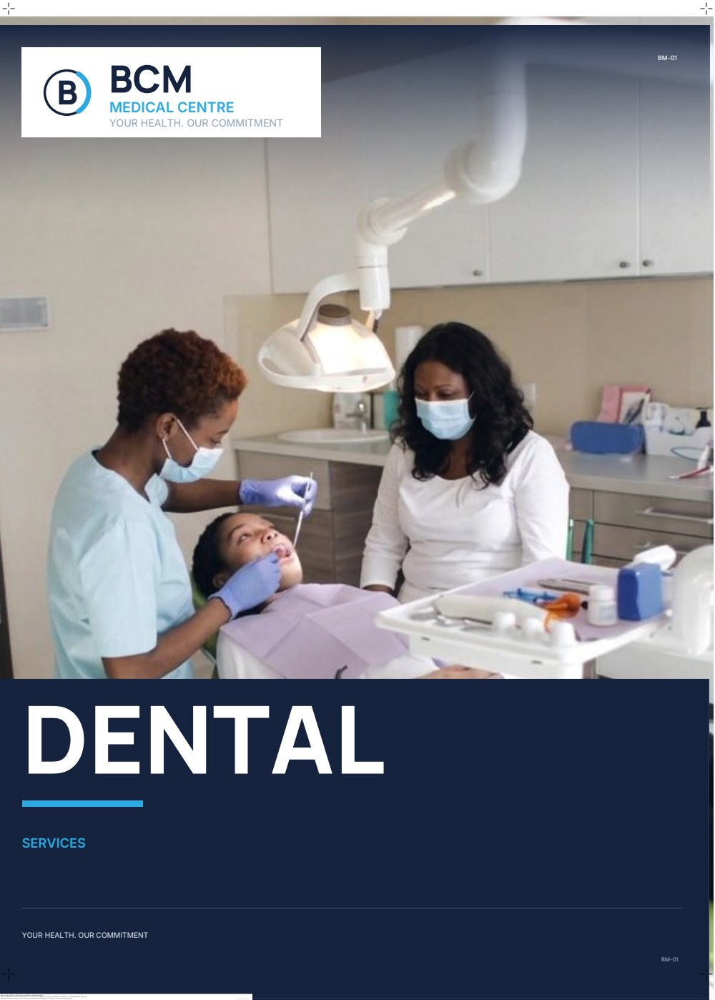
GLASS DOOR GRAPHICS · ONE-WAY VISION FILM · REV R2
Photographic service panels for the four glazed leaves of the BCM Medical Centre frontage — dental, paediatrics, laboratory, physiotherapy, pharmacy, antenatal, reception and a services directory — printed on perforated film so the clinic stays visible from inside and the street reads the poster from outside.
Provisional — Rev R2. Pane sizes are scaled from the client's own shopfront photograph and must be confirmed on site. The monogram is a vector recreation of the client's sign; the client's vector logo replaces it before release.
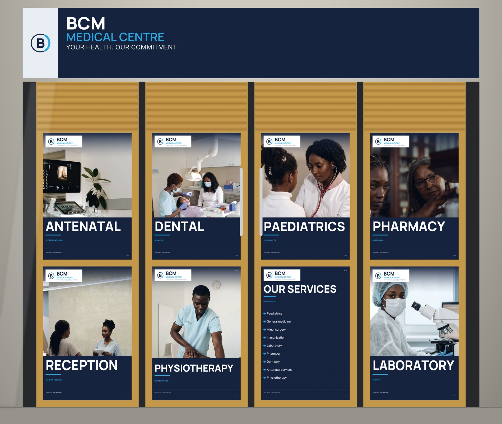
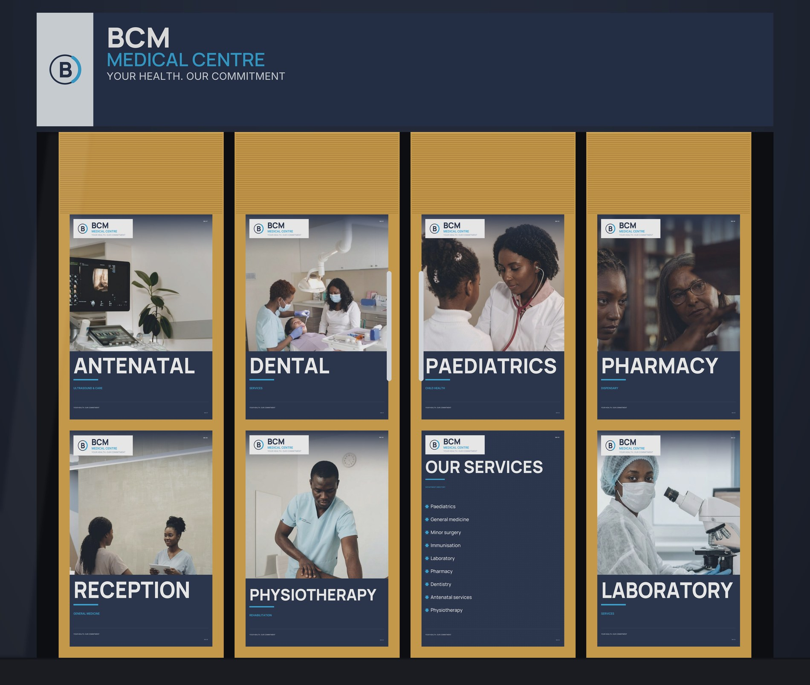

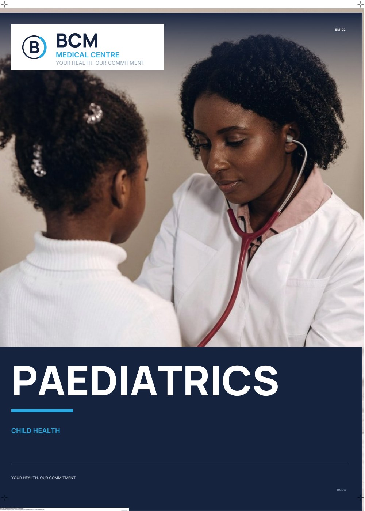
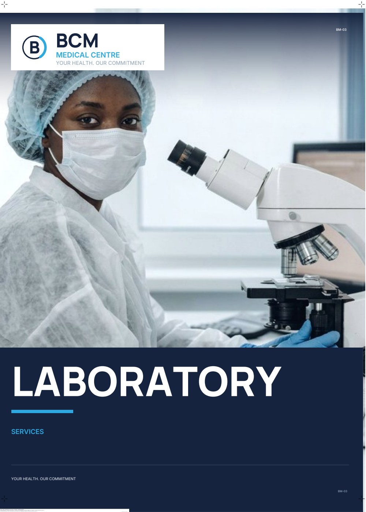
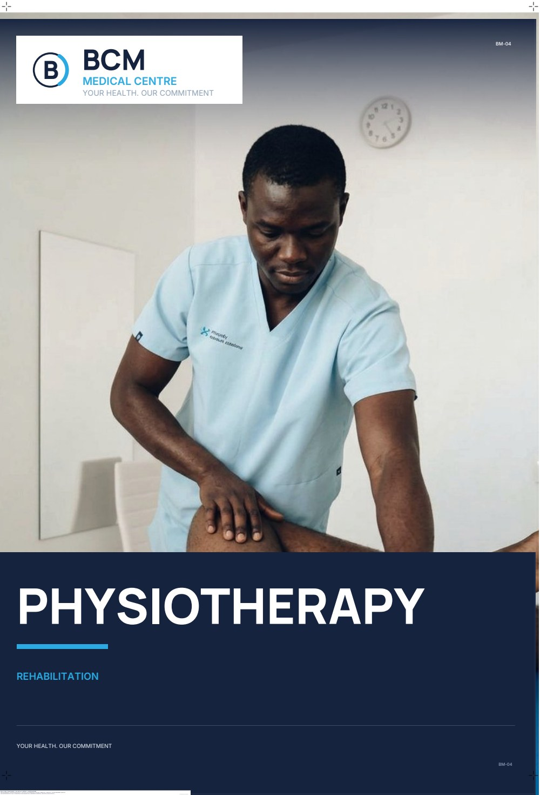
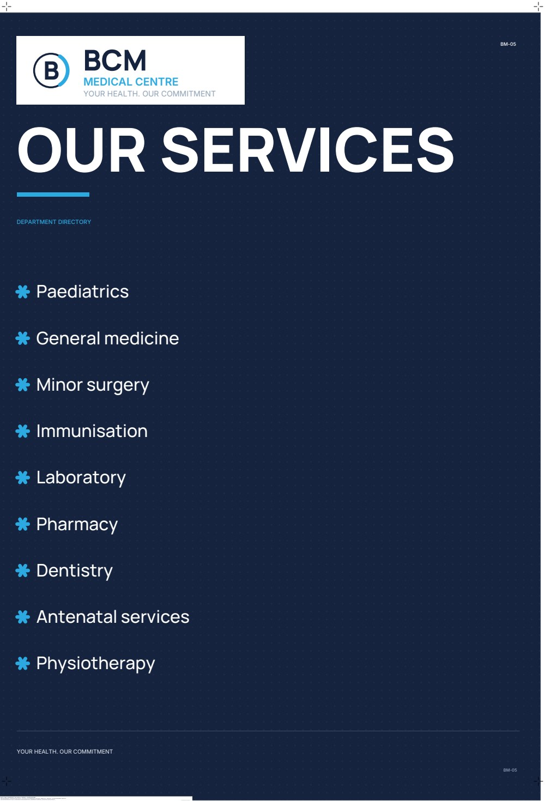
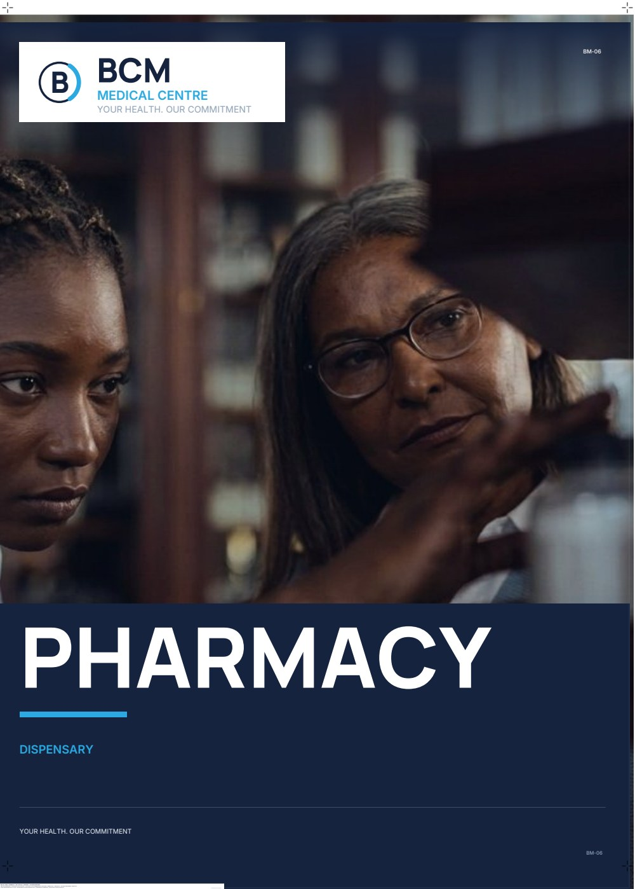
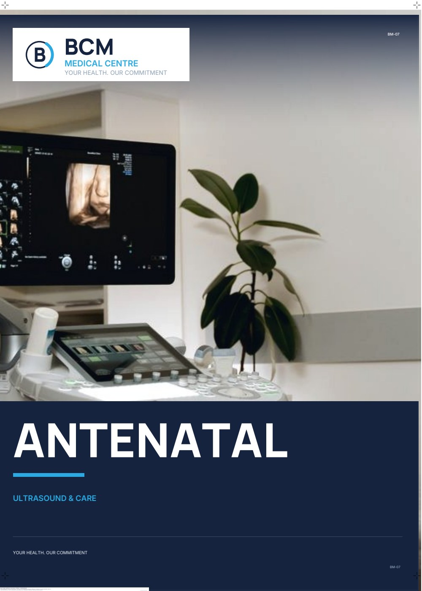
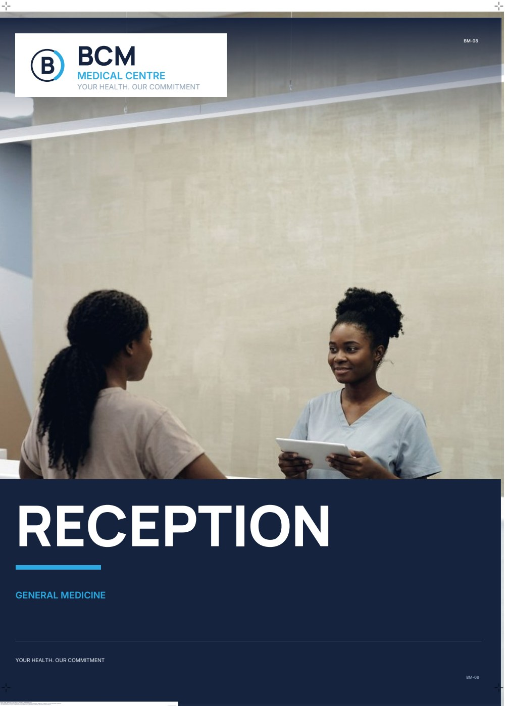
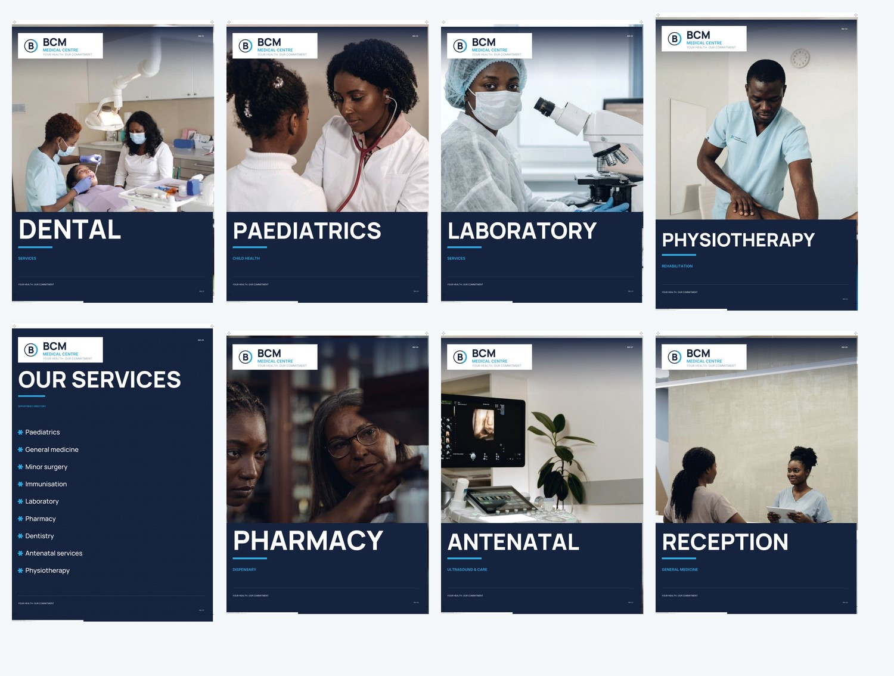
Real, professionally shot stock photography as the base — no AI-generated scenes or people. 6 of the originals then carry a colour retouch, made with an AI image editor so the people reflect the community the clinic serves; scenes, poses and clothing are untouched. The people are models, never staff or patients, and no panel captions them as such. Licence terms read on Pexels' licence page, 28 October 2026: commercial use including print, editing and cropping permitted, attribution not required.
| Asset | Pane | Subject | Creator | Source | Original | Licence |
|---|---|---|---|---|---|---|
| PH-01 | BM-08 | Receptionist assisting a patient at a modern reception desk | Cedric Fauntleroy | Pexels 4269206 | 843 × 1,264 | Free licence, checked 28 Oct 2026 |
| PH-02 | BM-01 | Female dentist performing treatment in a modern dental clinic | Andrea Piacquadio | Pexels 3952130 | 1,264 × 842 | Free licence, checked 28 Oct 2026 |
| PH-03 | BM-02 | Paediatrician examining a child with a stethoscope | Pavel Danilyuk | Pexels 5998457 | 844 × 1,264 | Free licence, checked 28 Oct 2026 |
| PH-04 | BM-04 | Physiotherapist treating a patient's leg in a clinic | Funkcines Terapijos Centras | Pexels 20860597 | 843 × 1,264 | Free licence, checked 28 Oct 2026 |
| PH-05 | BM-03 | Laboratory technician at a trinocular microscope | Pavel Danilyuk | Pexels 8442574 | 1,264 × 844 | Free licence, checked 28 Oct 2026 |
| PH-06 | BM-06 | Pharmacists examining medicine on dispensary shelving | cottonbro studio | Pexels 8657370 | 1,264 × 842 | Free licence, checked 28 Oct 2026 |
| PH-07 | BM-07 | Ultrasound scanner and examination couch in a clinic scanning room | MART PRODUCTION | Pexels 7089304 | 6,123 × 4,082 | Free licence, checked 28 Oct 2026 |
| PH-08 | — | Doctor consulting a patient across a desk | cottonbro studio | Pexels 7580254 | 4,189 × 6,284 | Free licence, checked 28 Oct 2026 |